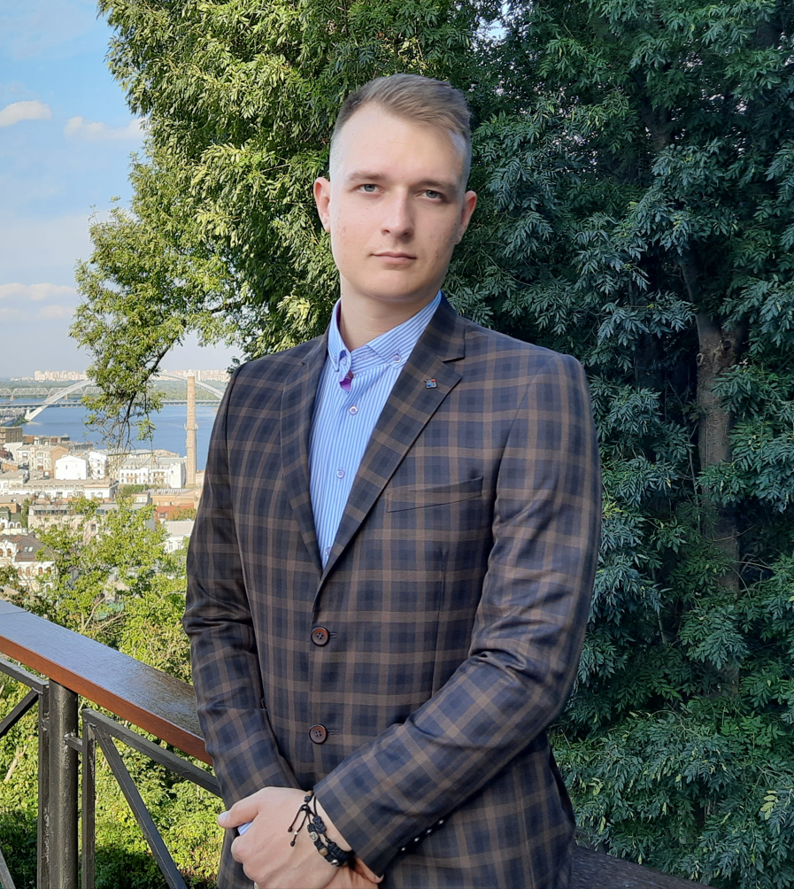

Студент Beetroot academy
5 років служби на посаді "Інструктіор Кінологічного відділення"
Тім лідер-один рік
В роки університету займався цікавими для мене речами, спорт та інформаційна безпека. Спочатку писав bat віруси, котрими можно було знищити всі дані на чужому комп'ютері, адже антивірус на такий формат не реагує. Почав вивчення троян вірусів, та задля розваги та "спортивного" інтересу відправляв вірус склеєний кріптором з звичайною картинкою однокурсникам та однокурсницям. З задоволенням лазив по особистим файлам нічого не підозрюючих товаришів. Відкрив для себе сніффер посиланнями - дізнавався IP товариштів та з якого пристрою, веб-браузеру він сидить в мережі інтернет. Красти cookie файли, підключатися до веб камер, володіти дистанційним доступом комп'ютера іншої особи було неймовірно цікаво, я це робив без поганих спонукань, адже це зовсім інший світ, котрий дуже цікавий для мене. З допомогою PHP Devel Studio робив фейк застосунки (вхід в лаунчер світу танків, міні застосунок Вконтакте ) візуально дуже схожий на оригінальний застосунок, прив'язував все це до сніффер сайту. В результаті отримував паролі та емейли які були введені в відповідні поля цього фейкового "додатку" . Володів чужими сторінками соцмереж, адже вмію переконувати чому саме потрібно скачати цю програму та зайти саме через неї. Робив DoS атаки на сайти через Python і не тільки. GPS трекер або FM радіо мікрофон - підкинутий кращому другу, викликав у мене відчуття радості та сміху, адже тепер я знав де він ходить та що каже на невеликій відстані від мене . Але згодом я зрозумів, що є і професіонали , котрі використовуючи такого роду "забавки" роблять незаконні та шкідливі речі. Моя сім'я також не мало разів зіткнулася з такого роду злочинцями, котрі крали чи обманним шляхом заволодівали коштами моєї сім'ї. Саме тому я і пішов на факультет кібербезпеки, адже там навчають як захистити свої персональні дані та не стати жертвою кіберзлочинців. Прагну вступити до кібервійська, адже маю мету здобути більший рівень своїх навичок та бути корисним в державній службі. Володію українською, російською та англійською на рівні B1, проходив підготовку для складання сертифікату рівня B2 First(FCE) , отримати його для мене не буде складно. За час служби за контрактом , на посаді інструктора групи кінологів , неодноразово займав перші місця в змаганнях серед мого прикордонного загону. Змотивований на службу, адже прагну кар'єрного росту, отримання військового звання. Маю намір вчитись і після отримання другої вищої освіти, щоб здобувати нові навички та знання З повагою , старший сержант Широбоков Георгій .